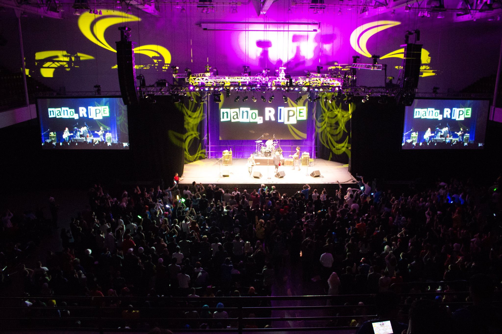
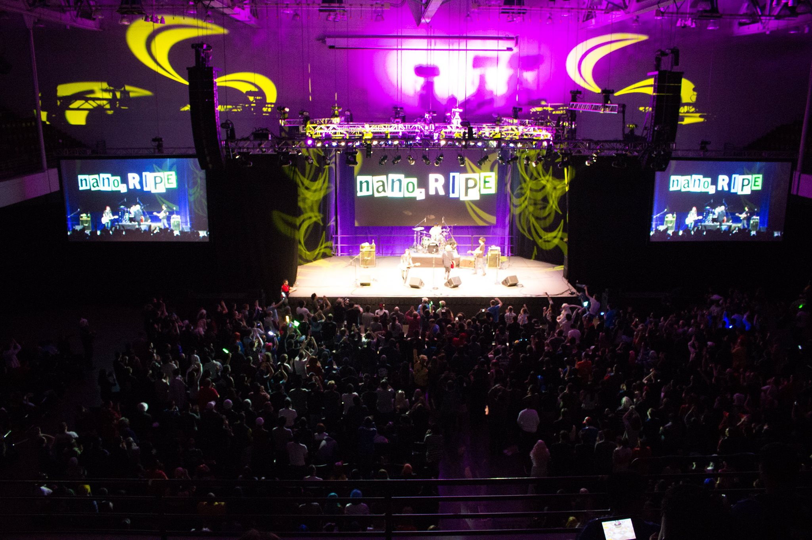

Anime Boston Volunteer Program 2016
Anime Boston is part of the non-profit called North Eastern Anime Society. The Anime Boston Volunteer Program (ABVP) is a subsection of Anime Boston in charge of assisting in providing volunteer labor for the convention as well as creating a positive experience for volunteers. Volunteer work includes things such as line control, passing out pamflits, and assisting departments in other similar work.
2016
 

Summer Event
For the summer event in 2016, we took the volunteers to a theme park. We subsidized the ticket costs to make the event more accessible to everyone.